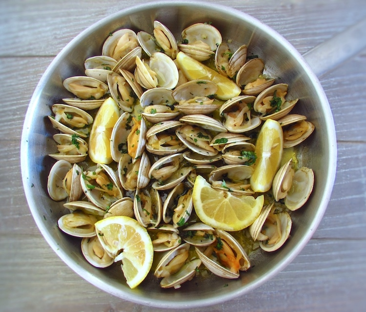

Clams with Lemon and Garlic

Description
Prepare a special appetizer for your family or friends. Try this typical Portuguese recipe of clams, the lemon juice aroma and the chopped coriander gives it a special taste that everyone will like.
Ingredients
- 1 kg (2 1/4 pounds) clams
- 4 cloves of garlic
- Coriander (to taste)
- Juice of one lemon
- Salt (to taste)
- Pepper (to taste)
Steps
- Place the clams to soak in water seasoned with salt about 1 to 2 hours. Wash them under running water before cooking.
- Place the olive oil and the chopped garlic in a skillet and saute over low heat about 2 to 3 minutes, stirring occasionally. Add the clams, stir, cover the skillet with a lid and cook over low heat until the clams open completely. Shake the skillet occasionally.
- Turn off the heat, season with pepper, lemon juice and chopped coriander and serve.